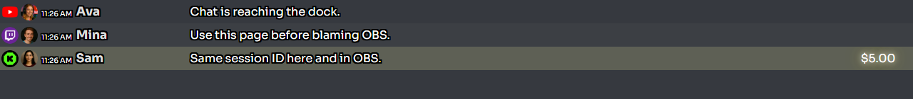
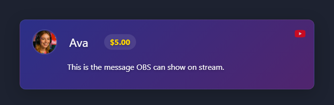

Affichez le chat dans OBS avec un minimum d'étapes.
SSN already made a session ID for you and puts it in every link it shows, along with your password and connection settings if you use them. Copy those links instead of typing your own; that ID is how your chat source, dock, and OBS overlay find each other.
You will use two of them: Incrustation principale du chat et Dock de contrôle et Incrustation de chat mis en avant. Each has a Copier le lien (Copy link) bouton.
Vous ne savez pas quel mode de source utiliser ? Consultez le Sélecteur de configuration de plateforme.
The dock is your test screen. In SSN, click Copier le lien (Copy link) à côté de Incrustation principale du chat et Dock de contrôle and open it in a browser tab before changing OBS settings.
Your link will look something like https://socialstream.ninja/dock.html?session=..., with your own ID and settings after it.

In OBS, add a Browser Source and paste one of your copied links as its URL. Pick the one that matches what you want on stream:

For other chat looks, pick a template from the Galerie de modèles.
Vérifiez un élément à la fois, dans cet ordre.
session as your dock.Plus de détails : Dépannage.